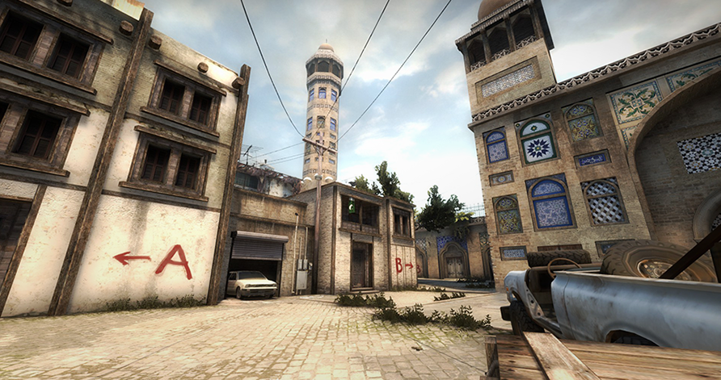
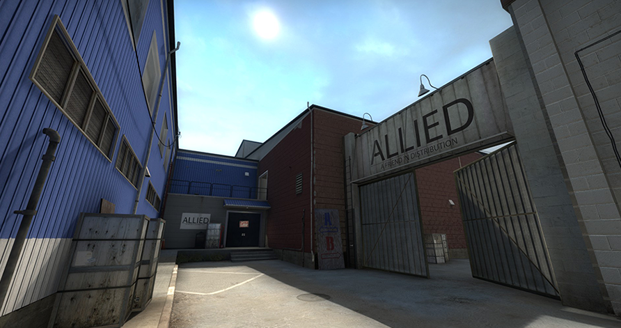
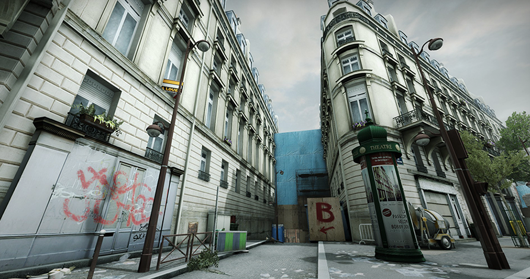
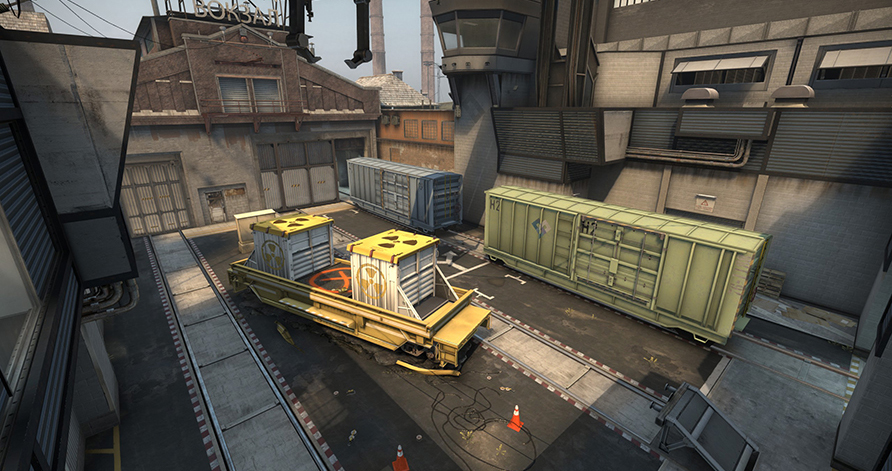

Bomb defusal maps in opperation Vanguard
Bazaar
Bazaar (de_bazaar) is a defusal map created by Skybex and featured as part of Operation Vanguard in Counter-Strike: Global Offensive. On the October 13, 2016 Update, the map was removed from the game files, making Bazaar inaccessible via console. The SAS is on a mission to disarm a local weapons market who have got their hands on chemical weapons in Lahore, Pakistan.
Facade
Facade (de_facade) is a defusal map created by TopHATTwaffle and maxgiddens and featured as part of Operation Vanguard in Counter-Strike: Global Offensive. On the October 13, 2016 Update, the map was removed from the game files, making Facade inaccessible via console. Facade is set in an industrial factory worksite with a structure resembling Nuke. The bombsites are set as storage rooms and an office complex is situated in the map, perfect for ambushes. Similar to Dust2 and Mirage, there is a middle which can be guarded by snipers.
Marquis
Marquis (de_marquis) is a defusal map created by Kane and DamDam and featured as part of Operation Vanguard in Counter-Strike: Global Offensive. On the October 13, 2016 Update, the map was removed from the game files, making Marquis inaccessible via console. The conflict appears to be somewhere in Paris, the capital city of France. The Counter-Terrorists featured in the Operation Vanguard title image are standing in front of barricades on this map.
Season

Season (de_season) is a community created map featured heavily in professional competitive play since its creation for Counter-Strike: Source. It has since been included as part of Operation Vanguard in Counter-Strike: Global Offensive. On the October 13, 2016 Update, the map was removed from the game files, making Season inaccessible via console. The conflict is occurring within a bio-research facility in Tokyo, Japan. Mount Fuji is visible in the distance in the skybox. The map features clean aesthetics with a significant usage of white and other simple, bright whole colors. The Counter-Terrorist force is the SAS and the Terrorist force is the Phoenix Connexion.
Train
Train (de_train) is a bomb defusal map featured in Counter-Strike, Counter-Strike: Source, and Counter-Strike: Global Offensive. Counter-Terrorists: Prevent Terrorists from bombing the nuclear payloads on two trains. Team members must defuse any bombs that threaten the payloads. Terrorists: The Terrorist carrying the C4 must destroy one of the payloads. The original map featured plain textures derived from Half-Life and the conflict was taking place in an industrial setting with a train station.